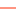
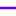

<!doctype html>
<html lang="en">
    <head>
        <meta charset="utf-8">
        <meta http-equiv="X-UA-Compatible" content="IE=edge">
        <meta name="viewport" content="initial-scale=1,user-scalable=no,maximum-scale=1,width=device-width">
        <meta name="mobile-web-app-capable" content="yes">
        <meta name="apple-mobile-web-app-capable" content="yes">
        <link rel="stylesheet" href="css/leaflet.css">
        <link rel="stylesheet" href="css/qgis2web.css"><link rel="stylesheet" href="css/fontawesome-all.min.css">
        <link rel="stylesheet" href="css/leaflet-measure.css">
        <style>
        html, body, #map {
            width: 100%;
            height: 100%;
            padding: 0;
            margin: 0;
        }
        </style>
        <title></title>
    </head>
    <body>
        <div id="map">
        </div>
        <script src="js/qgis2web_expressions.js"></script>
        <script src="js/leaflet.js"></script>
        <script src="js/leaflet.rotatedMarker.js"></script>
        <script src="js/leaflet.pattern.js"></script>
        <script src="js/leaflet-hash.js"></script>
        <script src="js/Autolinker.min.js"></script>
        <script src="js/rbush.min.js"></script>
        <script src="js/labelgun.min.js"></script>
        <script src="js/labels.js"></script>
        <script src="js/leaflet-measure.js"></script>
        <script src="data/Chanel2_5.js"></script>
        <script src="data/Kontur_6.js"></script>
        <script>
        var highlightLayer;
        function highlightFeature(e) {
            highlightLayer = e.target;

            if (e.target.feature.geometry.type === 'LineString') {
              highlightLayer.setStyle({
                color: '#ffff00',
              });
            } else {
              highlightLayer.setStyle({
                fillColor: '#ffff00',
                fillOpacity: 1
              });
            }
            highlightLayer.openPopup();
        }
        var map = L.map('map', {
            zoomControl:true, maxZoom:28, minZoom:1
        }).fitBounds([[0.48552415348781053,98.81381272486568],[1.2972443935462308,100.30039164973562]]);
        var hash = new L.Hash(map);
        map.attributionControl.setPrefix('<a href="https://github.com/tomchadwin/qgis2web" target="_blank">qgis2web</a> &middot; <a href="https://leafletjs.com" title="A JS library for interactive maps">Leaflet</a> &middot; <a href="https://qgis.org">QGIS</a>');
        var autolinker = new Autolinker({truncate: {length: 30, location: 'smart'}});
        var measureControl = new L.Control.Measure({
            position: 'topleft',
            primaryLengthUnit: 'meters',
            secondaryLengthUnit: 'kilometers',
            primaryAreaUnit: 'sqmeters',
            secondaryAreaUnit: 'hectares'
        });
        measureControl.addTo(map);
        document.getElementsByClassName('leaflet-control-measure-toggle')[0]
        .innerHTML = '';
        document.getElementsByClassName('leaflet-control-measure-toggle')[0]
        .className += ' fas fa-ruler';
        var bounds_group = new L.featureGroup([]);
        function setBounds() {
        }
        map.createPane('pane_ESRISatellite_0');
        map.getPane('pane_ESRISatellite_0').style.zIndex = 400;
        var layer_ESRISatellite_0 = L.tileLayer('https://server.arcgisonline.com/ArcGIS/rest/services/World_Imagery/MapServer/tile/{z}/{y}/{x}', {
            pane: 'pane_ESRISatellite_0',
            opacity: 1.0,
            attribution: '',
            minZoom: 1,
            maxZoom: 28,
            minNativeZoom: 0,
            maxNativeZoom: 20
        });
        layer_ESRISatellite_0;
        map.addLayer(layer_ESRISatellite_0);
        map.createPane('pane_ReclasifiedRaster_1');
        map.getPane('pane_ReclasifiedRaster_1').style.zIndex = 401;
        var img_ReclasifiedRaster_1 = 'data/ReclasifiedRaster_1.png';
        var img_bounds_ReclasifiedRaster_1 = [[0.45787790311906906,98.92699016261038],[1.5436690137079823,99.93698191895159]];
        var layer_ReclasifiedRaster_1 = new L.imageOverlay(img_ReclasifiedRaster_1,
                                              img_bounds_ReclasifiedRaster_1,
                                              {pane: 'pane_ReclasifiedRaster_1'});
        bounds_group.addLayer(layer_ReclasifiedRaster_1);
        map.addLayer(layer_ReclasifiedRaster_1);
        map.createPane('pane_Slopee_2');
        map.getPane('pane_Slopee_2').style.zIndex = 402;
        var img_Slopee_2 = 'data/Slopee_2.png';
        var img_bounds_Slopee_2 = [[0.45787790311906906,98.92699016261038],[1.5436690137079823,99.93698191895159]];
        var layer_Slopee_2 = new L.imageOverlay(img_Slopee_2,
                                              img_bounds_Slopee_2,
                                              {pane: 'pane_Slopee_2'});
        bounds_group.addLayer(layer_Slopee_2);
        map.addLayer(layer_Slopee_2);
        map.createPane('pane_DASBATANGGADISTekstur_3');
        map.getPane('pane_DASBATANGGADISTekstur_3').style.zIndex = 403;
        var img_DASBATANGGADISTekstur_3 = 'data/DASBATANGGADISTekstur_3.png';
        var img_bounds_DASBATANGGADISTekstur_3 = [[0.45787790311906906,98.92699016261038],[1.5436690137079823,99.93698191895159]];
        var layer_DASBATANGGADISTekstur_3 = new L.imageOverlay(img_DASBATANGGADISTekstur_3,
                                              img_bounds_DASBATANGGADISTekstur_3,
                                              {pane: 'pane_DASBATANGGADISTekstur_3'});
        bounds_group.addLayer(layer_DASBATANGGADISTekstur_3);
        map.addLayer(layer_DASBATANGGADISTekstur_3);
        map.createPane('pane_DASBATANGGADISWarna_4');
        map.getPane('pane_DASBATANGGADISWarna_4').style.zIndex = 404;
        var img_DASBATANGGADISWarna_4 = 'data/DASBATANGGADISWarna_4.png';
        var img_bounds_DASBATANGGADISWarna_4 = [[0.45787790311906906,98.92699016261038],[1.5436690137079823,99.93698191895159]];
        var layer_DASBATANGGADISWarna_4 = new L.imageOverlay(img_DASBATANGGADISWarna_4,
                                              img_bounds_DASBATANGGADISWarna_4,
                                              {pane: 'pane_DASBATANGGADISWarna_4'});
        bounds_group.addLayer(layer_DASBATANGGADISWarna_4);
        map.addLayer(layer_DASBATANGGADISWarna_4);
        function pop_Chanel2_5(feature, layer) {
            layer.on({
                mouseout: function(e) {
                    for (i in e.target._eventParents) {
                        e.target._eventParents[i].resetStyle(e.target);
                    }
                    if (typeof layer.closePopup == 'function') {
                        layer.closePopup();
                    } else {
                        layer.eachLayer(function(feature){
                            feature.closePopup()
                        });
                    }
                },
                mouseover: highlightFeature,
            });
            var popupContent = '<table>\
                    <tr>\
                        <td colspan="2">' + (feature.properties['SEGMENT_ID'] !== null ? autolinker.link(feature.properties['SEGMENT_ID'].toLocaleString()) : '') + '</td>\
                    </tr>\
                    <tr>\
                        <td colspan="2">' + (feature.properties['NODE_A'] !== null ? autolinker.link(feature.properties['NODE_A'].toLocaleString()) : '') + '</td>\
                    </tr>\
                    <tr>\
                        <td colspan="2">' + (feature.properties['NODE_B'] !== null ? autolinker.link(feature.properties['NODE_B'].toLocaleString()) : '') + '</td>\
                    </tr>\
                    <tr>\
                        <td colspan="2">' + (feature.properties['BASIN'] !== null ? autolinker.link(feature.properties['BASIN'].toLocaleString()) : '') + '</td>\
                    </tr>\
                    <tr>\
                        <td colspan="2">' + (feature.properties['ORDER'] !== null ? autolinker.link(feature.properties['ORDER'].toLocaleString()) : '') + '</td>\
                    </tr>\
                    <tr>\
                        <td colspan="2">' + (feature.properties['ORDER_CELL'] !== null ? autolinker.link(feature.properties['ORDER_CELL'].toLocaleString()) : '') + '</td>\
                    </tr>\
                    <tr>\
                        <td colspan="2">' + (feature.properties['LENGTH'] !== null ? autolinker.link(feature.properties['LENGTH'].toLocaleString()) : '') + '</td>\
                    </tr>\
                </table>';
            layer.bindPopup(popupContent, {maxHeight: 400});
        }

        function style_Chanel2_5_0() {
            return {
                pane: 'pane_Chanel2_5',
                opacity: 1,
                color: 'rgba(101,0,232,1.0)',
                dashArray: '',
                lineCap: 'square',
                lineJoin: 'bevel',
                weight: 3.0,
                fillOpacity: 0,
                interactive: true,
            }
        }
        map.createPane('pane_Chanel2_5');
        map.getPane('pane_Chanel2_5').style.zIndex = 405;
        map.getPane('pane_Chanel2_5').style['mix-blend-mode'] = 'normal';
        var layer_Chanel2_5 = new L.geoJson(json_Chanel2_5, {
            attribution: '',
            interactive: true,
            dataVar: 'json_Chanel2_5',
            layerName: 'layer_Chanel2_5',
            pane: 'pane_Chanel2_5',
            onEachFeature: pop_Chanel2_5,
            style: style_Chanel2_5_0,
        });
        bounds_group.addLayer(layer_Chanel2_5);
        map.addLayer(layer_Chanel2_5);
        function pop_Kontur_6(feature, layer) {
            layer.on({
                mouseout: function(e) {
                    for (i in e.target._eventParents) {
                        e.target._eventParents[i].resetStyle(e.target);
                    }
                    if (typeof layer.closePopup == 'function') {
                        layer.closePopup();
                    } else {
                        layer.eachLayer(function(feature){
                            feature.closePopup()
                        });
                    }
                },
                mouseover: highlightFeature,
            });
            var popupContent = '<table>\
                    <tr>\
                        <td colspan="2">' + (feature.properties['fid'] !== null ? autolinker.link(feature.properties['fid'].toLocaleString()) : '') + '</td>\
                    </tr>\
                    <tr>\
                        <td colspan="2">' + (feature.properties['ID'] !== null ? autolinker.link(feature.properties['ID'].toLocaleString()) : '') + '</td>\
                    </tr>\
                    <tr>\
                        <td colspan="2">' + (feature.properties['ELEV'] !== null ? autolinker.link(feature.properties['ELEV'].toLocaleString()) : '') + '</td>\
                    </tr>\
                </table>';
            layer.bindPopup(popupContent, {maxHeight: 400});
        }

        function style_Kontur_6_0() {
            return {
                pane: 'pane_Kontur_6',
                opacity: 1,
                color: 'rgba(255,39,1,1.0)',
                dashArray: '',
                lineCap: 'square',
                lineJoin: 'bevel',
                weight: 1.0,
                fillOpacity: 0,
                interactive: true,
            }
        }
        map.createPane('pane_Kontur_6');
        map.getPane('pane_Kontur_6').style.zIndex = 406;
        map.getPane('pane_Kontur_6').style['mix-blend-mode'] = 'normal';
        var layer_Kontur_6 = new L.geoJson(json_Kontur_6, {
            attribution: '',
            interactive: true,
            dataVar: 'json_Kontur_6',
            layerName: 'layer_Kontur_6',
            pane: 'pane_Kontur_6',
            onEachFeature: pop_Kontur_6,
            style: style_Kontur_6_0,
        });
        bounds_group.addLayer(layer_Kontur_6);
        map.addLayer(layer_Kontur_6);
        var baseMaps = {};
        L.control.layers(baseMaps,{' Kontur': layer_Kontur_6,' Chanel 2': layer_Chanel2_5,"DAS BATANG GADIS Warna": layer_DASBATANGGADISWarna_4,"DAS BATANG GADIS Tekstur": layer_DASBATANGGADISTekstur_3,"Slopee": layer_Slopee_2,"Reclasified Raster": layer_ReclasifiedRaster_1,"ESRI Satellite": layer_ESRISatellite_0,}).addTo(map);
        setBounds();
        var i = 0;
        layer_Kontur_6.eachLayer(function(layer) {
            var context = {
                feature: layer.feature,
                variables: {}
            };
            layer.bindTooltip((layer.feature.properties['ELEV'] !== null?String('<div style="color: #323232; font-size: 10pt; font-family: \'Open Sans\', sans-serif;">' + layer.feature.properties['ELEV']) + '</div>':''), {permanent: true, offset: [-0, -16], className: 'css_Kontur_6'});
            labels.push(layer);
            totalMarkers += 1;
              layer.added = true;
              addLabel(layer, i);
              i++;
        });
        L.ImageOverlay.include({
            getBounds: function () {
                return this._bounds;
            }
        });
        resetLabels([layer_Kontur_6]);
        map.on("zoomend", function(){
            resetLabels([layer_Kontur_6]);
        });
        map.on("layeradd", function(){
            resetLabels([layer_Kontur_6]);
        });
        map.on("layerremove", function(){
            resetLabels([layer_Kontur_6]);
        });
        </script>
    </body>
</html>
